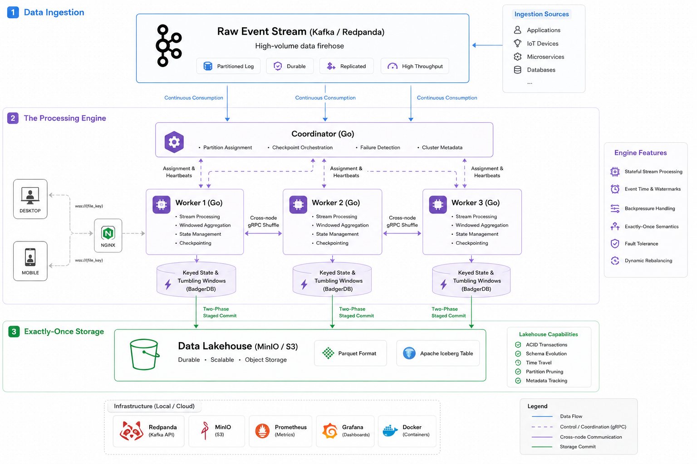
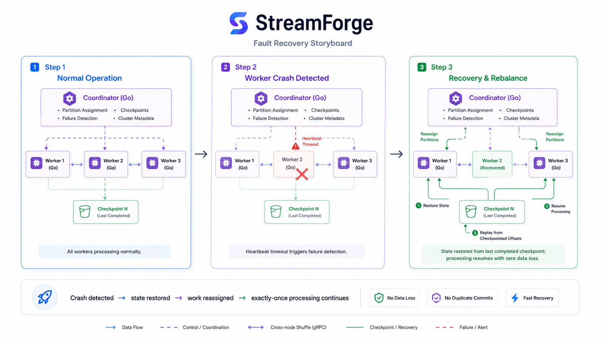

StreamForge
Distributed Stream Processing Engine
A from-scratch distributed stream processing engine in Go with coordinator-managed workers, event-time windows, durable checkpoint recovery, and effectively-once output under crash.
The Story
I wanted to understand what makes systems like Flink and Spark Structured Streaming dependable, so I built the core engine mechanics myself instead of wrapping an existing processor. StreamForge consumes Kafka events, partitions keyed state across workers, and coordinates the cluster over gRPC and Protobuf.
The hard part was not moving messages; it was making recovery correct. Workers checkpoint BadgerDB state and Kafka offsets at aligned barriers, stage Parquet output by checkpoint, and restore ownership after heartbeat-based failure detection. An automated chaos test kills a worker while the stream is active and reconciles committed output against deterministic ground truth.
The result is a defensible miniature stream processor with real distribution, event-time watermarks, fault-tolerant state, Prometheus/Grafana observability, and an Apache Iceberg sink that creates one time-travelable table snapshot per completed checkpoint.
Problem
Stateful stream processing must keep offsets, distributed state, and output in agreement when workers fail. If those advance independently, recovery either loses events or counts them twice. StreamForge treats all three as one checkpointed unit and makes the remaining crash-boundary behavior explicit.
Technical Depth
- Distributed engine: coordinator-managed workers with keyed gRPC/Protobuf shuffle, so every key aggregates on exactly one owner
- Fault tolerance: heartbeat detection, epoch-based reassignment, filtered state restore, and Kafka resume from checkpoint-owned offsets
- Correctness: aligned two-phase checkpoints and staged output commits verified by an automated crash reconciliation test
- Event-time processing: tumbling windows close from watermarks rather than wall-clock time, keeping replay assignments stable
- Measured limits: ~40k events/s at p99 ≤ 25 ms; the benchmark exposes the CPU/shuffle saturation knee instead of hiding it
Key Features
- Kafka source with engine-owned offsets and keyed state in BadgerDB
- Parquet output staged in S3-compatible MinIO and committed with checkpoints
- Worker crash injection plus no-loss and duplicate-window reconciliation
- Prometheus metrics for throughput, latency, checkpoints, lag, recovery, and shuffle traffic
- Provisioned Grafana dashboard for live workload and recovery monitoring
- Apache Iceberg sink with one snapshot per checkpoint and time-travel queries
Why It Matters
StreamForge demonstrates the systems work hidden behind a streaming API: coordination, partition ownership, replay-stable time semantics, durable state, and transactional output. The benchmark and failure tests make its guarantees inspectable rather than leaving them as architecture-diagram claims.
Honest scope: output is bit-exact exactly-once without failures. Under a mid-stream crash, it is effectively-once: zero lost keys and zero duplicate windows, with a small aggregate residual on windows that straddle recovery. Closing that residual requires Chandy-Lamport barrier snapshotting.
Tech Stack
- Go
- Kafka
- gRPC
- Protobuf
- BadgerDB
- Parquet
- S3 / MinIO
- Apache Iceberg
- Prometheus
- Grafana
- Docker
Built and benchmarked in 2026. Source and reproducible test harness on GitHub.
How StreamForge Moves, Commits, and Recovers Data
These diagrams connect the repository structure to the runtime path shown in the demo: a replayable Kafka source, coordinator-managed workers, checkpoint-coupled state and output, and recovery from durable offsets after a process failure.
End-to-End System Architecture
Read from top to bottom: ingestion feeds the distributed engine, and only completed checkpoints expose lakehouse output.

Data ingestion and replay
Kafka/Redpanda is the durable front door. The generator writes keyed records across six partitions; retaining those records lets a reassigned worker resume from checkpoint-owned offsets instead of trusting volatile in-memory progress.
Coordinator control plane
The Go coordinator manages membership, assigns six Kafka partitions and 64 key buckets, receives heartbeats, advances cluster epochs, and drives aligned checkpoint barriers. It controls ownership but does not process event payloads itself.
Worker data plane
Each worker consumes its assigned partitions and hashes every key into one authoritative bucket. Local keys enter that worker's aggregation loop; remote keys cross the gRPC shuffle to their owner, which updates event-time tumbling windows in BadgerDB.
Aligned checkpoint and staged commit
Prepare pauses sources and drains in-flight work. Commit snapshots BadgerDB state with Kafka offsets and stages pending Parquet. Only after every worker ACKs does one checkpoint metadata write make those staged files part of committed output.
Lakehouse and time travel
MinIO provides the S3-compatible object store for snapshots and staged Parquet. The verifier reads files referenced by completed checkpoints, while the Iceberg sink creates one table snapshot per checkpoint for atomic reads and time-travel queries.
Operations and observability
Prometheus collects throughput, latency, lag, checkpoint, recovery, and shuffle metrics; Grafana turns them into the operational view. Docker Compose supplies the repeatable local cluster used by the benchmark and chaos tests.
Fault Recovery Storyboard
The recovery path protects progress by treating worker state, source offsets, and visible output as one checkpointed unit.

Normal operation
Three workers process disjoint partitions and buckets in epoch 1. Checkpoint 3 records all worker snapshots, partition offsets, and staged Parquet paths, giving the cluster one durable point from which every component can agree to resume.
Crash detection
The Phase 6 test sends SIGKILL to worker w0 while the generator is active. An in-progress prepare aborts instead of publishing partial metadata; after 2.168 seconds without a heartbeat, the coordinator declares w0 dead and advances to epoch 2.
Restore and rebalance
Workers w1 and w2 take ownership of partitions [1, 3, 5] and [0, 2, 4], with 32 key buckets each. They scan all three checkpoint snapshots, restore only their newly owned buckets, and resume Kafka from checkpoint 3 offsets.
Resume and verify
The first post-rebalance checkpoint completes with both survivors and all six partitions. The recorded run reconciles 200 keys, zero keys below baseline, and zero duplicate committed windows; its 20,017 aggregate count makes the 17-event replay boundary explicit.